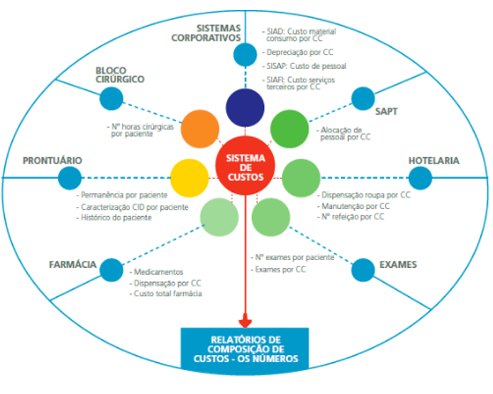

O SIGH Custos é o módulo do SIGH desenvolvido para dar suporte informatizado ao Sistema de Gerenciamento dos Custos Hospitalares.
Atualmente possibilita a apuração dos custos da Administração Central e das Unidades Assistenciais, e permiti a colocação dos custos entre as Unidades também.
O SIGH Custos recebe informações dos demais módulos do SIGH como: Farmácia, Prontuário, Bloco Cirúrgico, dentre outros. A interface se dará de forma automática após a centralização do SIGH e as informações dos módulos serão compartilhadas em tempo real.
O SIGH Custos também receberá informações transmitidas dos Sistemas Corporativos (SIAFI, SIAD, SISAP) e de outros sistemas internos da FHEMIG(SAPT).
Podemos exemplificar através do desenho a seguir as interligações do SIGH Custos.
